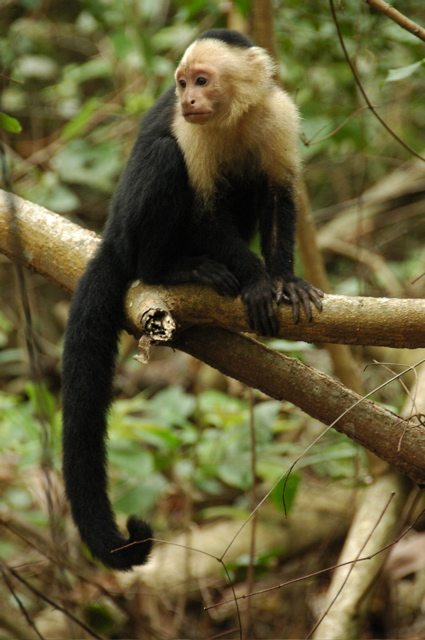

Nachdem wir völlig unweihnachtliche Weihnachten in Bocas verbracht haben - wo im übrigen alle Strände seit einem ominösen Sturm verschwunden sind - hatten wir genug von Panama und seinen wortkargen Bewohnern und sind wieder nach Costa Rica gefahren.
Das Highlight der Strecke hierhin war mal wieder der Grenzübergang. Diesmal aber nicht wegen bescheuerter Beamter, sondern wegen der alten, klapprigen Brücke über den Rio Sierpe, die die beiden Länder miteinander verbindet. Eigentlich handelt es sich um eine alte Eisenbahnbrücke. Damit der Weg über die kaputten Schwellen ohne Boden darunter nicht ganz so abenteuerlich ist, haben sie zwei Streifen Bretter darüber gelegt. So können (angeblich) auch Autos passieren.
In Cahuita haben sich die Warnungen der Reiseführer, dass man reservieren sollte, schließlich bewahrheitet. Unsere Traumresidenz war nicht mehr zu haben. Da das Kaff aber nur aus Restaurants und Hotels besteht, hat es nicht allzu lange gedauert, Ersatz zu finden.
In Cahuita gibt es einen schwarzen und einen weißen Strand. Der schwarze ist sogar noch viel schwärzer als der in Matapalo. Leider kommt das Meer aber auch hier so hoch, dass man sich nicht hinlegen kann. Der andere Strand ist Teil eines Nationalparks, der direkt hinter unserer Unterkunft, den Cabinas Riverside, anfängt.
30/12/2006
Mittlerweile sind unsere Tage in Cahuita wieder gezählt. In der Zwischenzeit haben wir uns voll und ganz der einzigen Attraktion gewidmet und haben den Nationalpark Cahuita dreimal besucht. Der erste Versuch ist von einem komplett verregneten Tag vereitelt worden. Anschließend wurden wir aber fürs Warten belohnt
Durch den Park, den man mit einer Spende beliebiger Höhe betreten kann, führt nur ein Wanderweg. Er läuft entlang der Küste durch ein wild bewaldetes Stück Land im Süden Cahuitas. Am Südende wartet ein langer, schöner und wieder schwarzer Strand.
Dazwischen haben wir erstaunlich viele Tiere beobachten können. Allen voran die Brüllaffen, deren seltsames Geheul über unsere Köpfe hallte. Ein späteres Stück Weg wird von Kapuzieneräffchen belagert. Die faulen Faultiere hielten jeweils nur einen Baum unter Beschlag. Rastlos zwischen den Stationen flatterte Morpho Azul, ein blau schimmernder Schmetterling in Handgröße.

Klein aber fein ist die Königin des Parks, der winzige Nachwuchs der giftigen Eyelash Viper (Bothriechis schlegelii). Die Schlange ist knallgelb und sehr giftig. Dieses Exemplar hatte die beruhigende Größe eines Regenwurms.

König der Herzen ist der rotäugige Laubfrosch, den wir schlafend auf einem Blatt erwischt haben. Wieder im Hotel angekommen mussten wir aber feststellen, dass der Wald letztendlich doch den Mosquitos gehört.

Daneben hat der Park noch ein paar sehr schöne Strände zu bieten. Leider haben wir den größten erst am letzten Tag entdeckt. Doch da hat es auch schon wieder angefangen zu regnen.